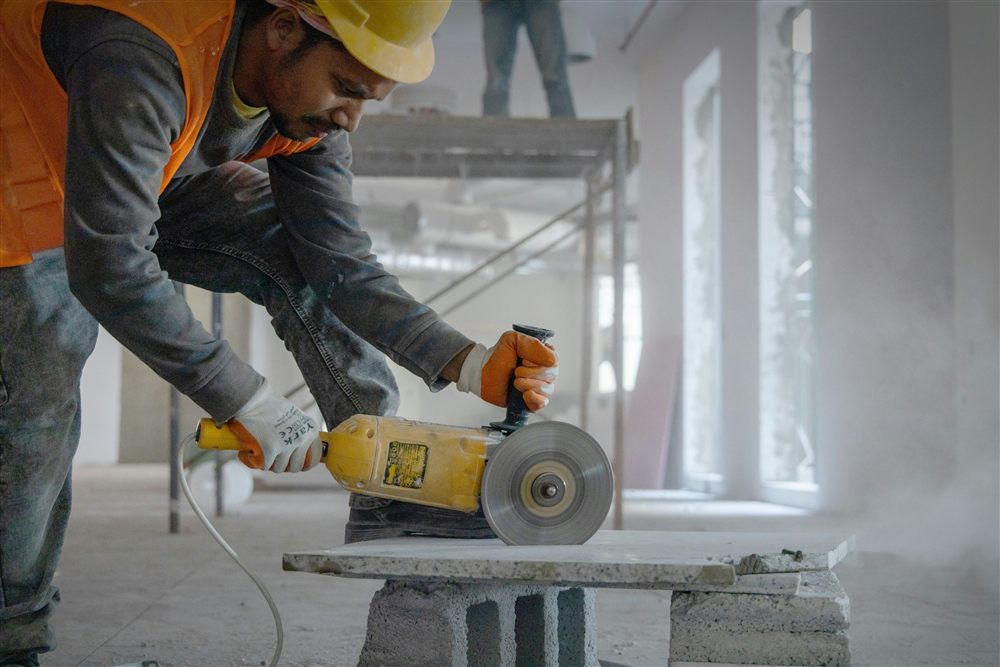
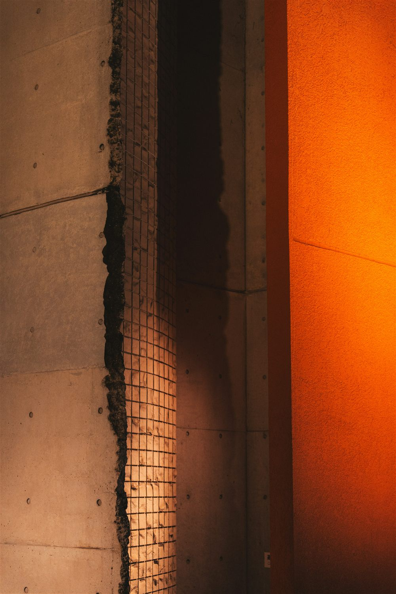

Qu'est-ce qu'une reprise de bétonnage
Une reprise de bétonnage est l'interface qui se forme lorsque le coulage d'un ouvrage en béton armé ne peut pas se faire en une seule opération continue. C'est le cas dès qu'un chantier dépasse une certaine taille : capacité de la centrale à béton, cadence de la toupie, hauteur de banche limitée, phasage entre les fondations, les voiles, les poteaux et les dalles. Le béton frais est alors coulé contre un béton déjà durci, et les deux matériaux doivent se comporter comme un seul et même élément une fois l'ouvrage terminé.
Le problème est que le béton durci ne se soude pas chimiquement au béton frais comme le ferait une coulée continue. L'adhérence entre les deux dépend entièrement de la préparation de la surface de reprise et, le cas échéant, des armatures qui la traversent. C'est pourquoi la reprise de bétonnage n'est pas un détail d'exécution laissé à l'appréciation du chantier : elle doit être anticipée dès l'étude de structure et le phasage de coulage.
Reprise de bétonnage et joint de dilatation : deux choses différentes. Le joint de dilatation sépare deux parties d'ouvrage qui doivent pouvoir bouger l'une par rapport à l'autre. La reprise de bétonnage, elle, doit au contraire assurer la continuité mécanique de la structure : les deux bétons doivent transmettre les efforts comme s'ils n'en formaient qu'un.
Pourquoi une reprise mal traitée est un point faible
Une surface de reprise non préparée présente une laitance en surface, un film de fines particules de ciment qui remonte lors de la vibration du béton. Cette laitance empêche l'accrochage du béton suivant. Si elle n'est pas éliminée, l'interface reste un plan de faiblesse mécanique : elle peut se désolidariser sous l'effet du retrait, des variations thermiques ou des charges d'exploitation.
Deux conséquences principales en découlent :
- Perte de résistance : l'interface ne transmet plus correctement le cisaillement, ce qui peut réduire la capacité portante réelle de l'élément par rapport à ce qu'a prévu la note de calcul.
- Infiltration d'eau : une reprise non traitée devient un chemin préférentiel pour l'eau, en particulier dans les ouvrages enterrés (fondations, voiles de soubassement, cuvelages). L'eau qui s'infiltre attaque ensuite les armatures par corrosion.
Sur un ouvrage courant, la majorité des désordres liés aux reprises de bétonnage ne sont pas dus au principe même de la reprise, mais à une préparation de surface insuffisante ou à un mauvais positionnement.

Où positionner les reprises de bétonnage
Le principe général est simple : une reprise doit être placée dans une zone où les sollicitations mécaniques sont les plus faibles possibles, jamais dans une zone de moment fléchissant maximal ou d'effort tranchant maximal. Le tableau ci-dessous résume les emplacements usuels selon le type d'élément.
| Élément | Emplacement recommandé | Emplacement à éviter |
|---|---|---|
| Poteau | En pied et en tête de niveau, au droit du plancher | À mi-hauteur du poteau |
| Poutre | Au voisinage du quart de la portée, hors zone d'appui | À mi-portée et au droit des appuis |
| Dalle | Sur une ligne de moment fléchissant faible, perpendiculaire à la portée principale | Au droit des zones de forte flexion (travées centrales) |
| Voile | Horizontale, au droit d'un plancher ou d'une longrine | Reprise inclinée ou en pleine hauteur de voile sans traitement |
| Semelle / radier | Limitée au strict nécessaire, surface traitée systématiquement | Reprise non prévue à l'étude et improvisée en cours de coulage |
Ce positionnement est défini par le bureau d'études dans le plan de phasage de bétonnage, en cohérence avec le plan de coffrage et le plan d'armatures.
Comment préparer la surface avant le second coulage
La préparation de la surface de reprise conditionne directement la qualité de l'adhérence. Elle comprend en général les étapes suivantes :
- Élimination de la laitance par repiquage, sablage, ou hydro-décapage, jusqu'à faire apparaître les granulats du béton durci.
- Rugosité minimale : l'Eurocode 2 (NF EN 1992-1-1, article 6.2.5) classe les surfaces de reprise selon leur rugosité et attribue à chacune un coefficient de frottement utilisé dans le calcul de résistance au cisaillement de l'interface.
- Humidification du béton ancien avant coulage, pour éviter qu'il n'absorbe l'eau de gâchage du béton frais.
- Application éventuelle d'un produit de collage (barbotine de ciment, résine d'accrochage) selon les prescriptions du bureau d'études, notamment pour les reprises sur béton ancien de plusieurs jours.
| Type de surface (EC2 §6.2.5) | Coefficient de frottement μ |
|---|---|
| Très lisse (coffrage métallique ou plastique, sans traitement) | 0,5 |
| Lisse (obtenue par glissement, non traitée) | 0,5 |
| Rugueuse (rugosité d'au moins 3 mm, par exemple par striage) | 0,7 |
| Indentée (crénelée, avec reliefs importants) | 0,9 |
Le coefficient de frottement n'est pas qu'une valeur théorique. Il entre directement dans le calcul de la résistance à l'effort tranchant de l'interface (formule de l'article 6.2.5 de l'Eurocode 2). Une surface simplement talochée, sans repiquage, ne bénéficie que du coefficient le plus faible : la note de calcul doit intégrer la préparation réellement mise en œuvre, pas une hypothèse optimiste.
Le rôle des armatures de couture
Lorsque l'effort de cisaillement à reprendre au niveau de l'interface dépasse ce que le frottement seul peut assurer, des armatures traversant la reprise, dites armatures de couture, sont mises en place. Elles travaillent en tirant les deux faces l'une contre l'autre et en s'opposant au glissement relatif des deux bétons.
Ces armatures sont soit prolongées depuis le premier coulage sous forme d'attentes, soit mises en place par percement et scellement chimique sur béton déjà durci lorsque la reprise n'a pas été anticipée. La première solution est toujours préférable : elle évite le perçage de l'ouvrage et garantit un ancrage conforme aux longueurs de recouvrement calculées selon l'Eurocode 2.

Les erreurs les plus fréquentes sur chantier
La plupart des désordres constatés viennent d'écarts d'exécution simples à éviter :
- Reprise improvisée en fin de journée sans préparation, faute d'anticipation du volume de béton disponible.
- Laitance non éliminée, laissée en place par manque de temps avant le coulage suivant.
- Absence d'armatures de couture alors que le calcul de l'interface les rendait nécessaires.
- Positionnement dans une zone de moment maximal, faute de concertation entre le bureau d'études et le planning de coulage de l'entreprise.
- Défaut d'étanchéité sur les reprises d'ouvrages enterrés, sans bande d'étanchéité ni traitement hydrofuge adapté.
Anticiper vaut mieux que réparer. Une reprise correctement positionnée et traitée ne coûte rien de plus qu'une reprise improvisée. Une reprise défaillante, en revanche, peut nécessiter une injection de résine, un rescellement d'armatures, voire une reprise en sous-œuvre si la fissuration évolue.
Comment MH Structure vous accompagne
MH Structure intègre le phasage de bétonnage dès l'étude de structure, en cohérence avec le plan de coffrage et le plan d'armatures :
- Localisation des reprises aux points de moindre sollicitation, validée par le calcul.
- Dimensionnement de l'interface selon l'Eurocode 2, avec détermination des armatures de couture si nécessaire.
- Prescriptions de préparation de surface transmises à l'entreprise, adaptées à chaque élément.
- Accompagnement partout en France et dans les DOM-TOM, y compris pour les ouvrages enterrés nécessitant un traitement d'étanchéité renforcé.
Un chantier à phaser correctement ? Transmettez-nous vos plans et votre planning de coulage : nous intégrons le phasage de bétonnage à la note de calcul et aux plans d'exécution. Premier échange gratuit, devis sous 48h.
Photos : Stephane YAICH, Glenov Brankovic, Alexander Kaufmann — via Unsplash